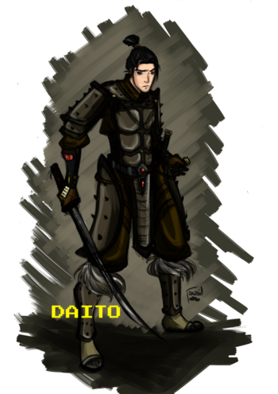

Samantha Evelyn Cook - AKA Art3mis
Art3mis is a famous gunter. She is first mentioned in Chapter 0002. She is the writer of "Arty's Missives," a blog dedicated to her search of Halliday's egg. Wade/Parzival describes her blog as a collection essays and Almanac interpretations, written in an endearing and intelligent voice. He then admits to having a crush on her, which is frequently addressed throughout the book and proves to complicate their competition. She is named after Artemis, the Greek goddess of the hunt.
Wade Owen Watts - Parzival

Wade Owen Watts (born August 12, 2025) is the protagonist and narrator of Ernest Cline's novel, Ready Player One. He is a poor orphan from the "stacks" surrounding metropolitan Oklahoma City. Wade names his OASIS character Parzival after Percival, the Arthurian knight famous for his quest for the Holy Grail, and dedicates his life to finding James Halliday's Easter egg.
Helen Harris - AKA Aech
Aech is a major character in Ernest Cline's Ready Player One. Aech is Wade's best friend , alhough the two didn't meet in-person until much later, Wade claims that they've always shared a great connection. In the beginning, it is clear that Wade and Aech shared many interests — movies, musics, videos games, and the hunt for Halliday's egg. Their shared quest for Halliday's egg brought about friendly competition. Aech and Wade would spend their time together discussing pop culture, Almanac findings, the hunt, and girls. He also attended OASIS public school, at OPS #1172. In the real world Aech is a heavy-set African-American girl named Helen Harris. Helen uses a Caucasian Male appearance and voice for her OASIS avatar in order to be more easily respected by her peers.
Akihide Karatsu - AKA Shoto
Akihide Karatsu (Japanese: 唐津明秀 [Karatsu Akihide]) was a Gunter who embarked upon Halliday's Easter Egg Hunt alongside Daito. In contrast to Toshiro Yoshiaki, whom Akihide sees as a brother figure but is cold and untrusting of others, Akihide is more friendly to other gunters (namely those in the High Five) and connects with Wade Watts on a better level than Daito did. He reaches out to Parzival to inform him of Daito's digital and physical death at the hands of IOI.
Toshiro Yoshiaki - AKA Daito

Toshiro Yoshiaki (Japanese: 義昭敏郎 [Yoshiaki Toshiro]) is a Japanese gunter who attempts to win Halliday's Easter Egg Hunt. Although reserved and cold initially, Toshiro befriends Parzival. He was a brother figure to Shoto, although the two of them had never met in person, they embarked upon the Hunt together and completed various elements of the Hunt in unison until Daito's demise, both in the OASIS and in real life, at the hands of IOI.
Nolan Sorrento - AKA IOI-655321
Nolan Sorrento is a high-ranking official of Innovative Online Industries (IOI), the multinational corporation that serves as an Internet service provider for most of the world and hopes to take over and monetize the OASIS. Sorrento is head of IOI's Oology (the science of searching for Halliday's Easter egg) Division, and serves as the primary antagonist of the novel; his employee number ID is IOI-655321. He is described as having blonde hair and a hawkish nose. He orders the death of Daito and is tried for it at the end of the book. Sorrento also tried to kill Wade by detonating a bomb under his aunt's trailer in the stacks, killing everyone in that stack including Mrs. Gilmore, an elderly woman who was Wade's friend. Though he works for IOI, it is revealed that Sorrento took the job only for the opportunity to destroy the entire Oasis.